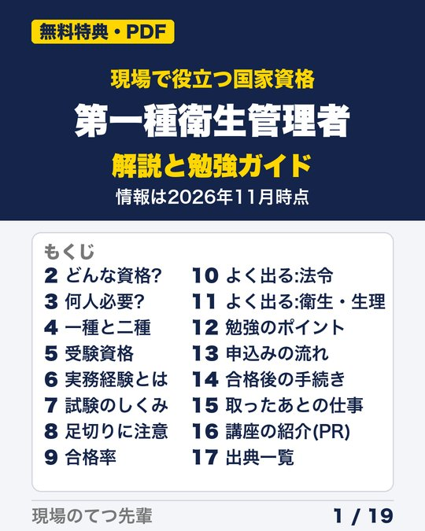

現場のてつ先輩
現場のてつ先輩
現場にいると、資格や講習の名前はよく耳に入ってきます。でもどれから、どうやって取るのかまで教わる機会は、なかなかありません。
転職しなくても、資格や講習で「今の現場で一歩上」を目指す道もあります。調べたことをここに置いています。良いことだけ書くつもりはありません。
てつ先輩
俺が資格を選ぶときの基準は、ひとつだけ。会社を出ても通じるか。社内だけで通じる肩書きだと、外に出たとき何も残らない気がしてね。
いま知りたいのは、どれ？
ページはどれも、登録なしで読めます

1
無料プレゼント
第一種衛生管理者の
勉強ガイドが欲しい
勉強ガイドが欲しい
試験のしくみ・よく出るテーマ・勉強のポイントを、公式の情報でまとめた19ページのPDF。受け取るには、InstagramかThreadsの投稿にコメントが必要です。
もらい方を見る →お金はかかりません
国の試験機関が出した数字2
ランキング
どの資格を、何人が
受けているのか知りたい
受けているのか知りたい
国の試験機関が公表している受験者数の多い順に並べました。合格率つき。おすすめ順でも、報酬の高い順でもありません。
ランキングを見る →数字の出どころは全部のせています
1資格＝1ページで調べました3
資格のとり方
この資格、どうやって
取るのか知りたい
取るのか知りたい
受験資格・試験の中身・合格の条件・費用・申し込みの流れ。試験をやっている団体の公式ページだけでまとめています。いまは危険物乙4と衛生管理者。これから増やします。
とり方を見る →数字には出どころと確認日つき
現場の資格・講習 72項目4
一覧
現場でどんな資格・
講習があるのか知りたい
講習があるのか知りたい
試験を受けて取る資格、法律で決まった講習、特別教育、学び直しの教育。このページに並べたのは72項目です。「どんな場面で名前を聞くか」つきです。
一覧を見る →自分に関係ある所だけ開けます
Eラーニング「SAT」の中身5
サービスの中身
「SAT」ってどんな
サービスか知りたい
サービスか知りたい
現場・技術系の資格にしぼったEラーニング。会社の成り立ち、値段、申し込みの流れ、返金の条件まで、公式サイトに書いてあることをそのまま並べています。
中身を見る →PR（広告）を含みます
どれを選ぶかは自分。
転職するかどうかは、後でいい。
会社員を続けてもいい。辞めてもいい。
選べることが大事。